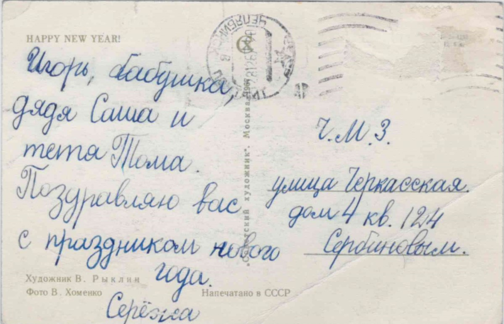
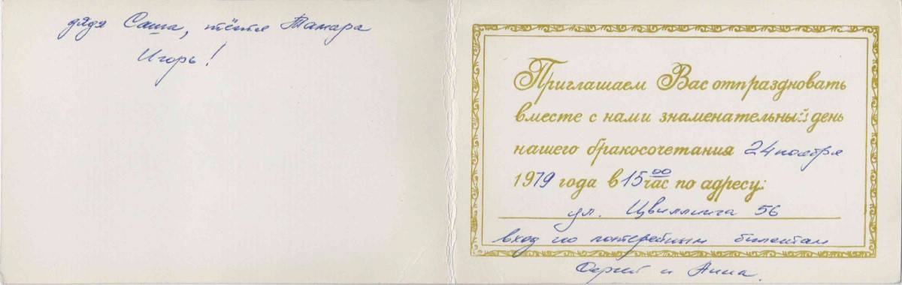

Родился: 05.02.1956, г. Челябинск
Род: Сербиновы
Возраст: 69
Место жительства: г. Челябинск
Основное занятие: Электрик
Отец: Сербинов Даниил Федорович
Мать: Сербинова (Клюева) Вера Ивановна
Брат: Сербинов Юрий Данилович
Жена: Фролова Анна Даниловна
Дочь: Сербинова Елена Сергеевна
Жена: Сербинова (Бабушкина) Татьяна Валерьевна
Сын: Сербинов Дмитрий Сергеевич
Открытка от Сергея: 28.12.1967, г. Челябинск. Приглашение на свадьбу: 24.11.1979, г. Челябинск. |